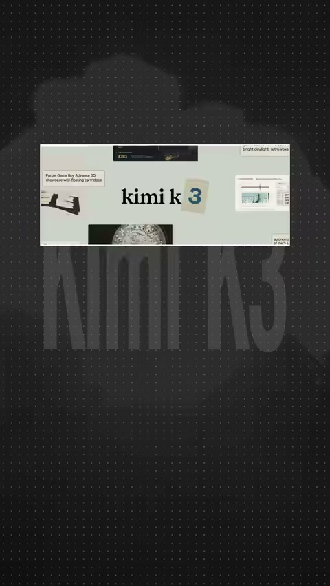
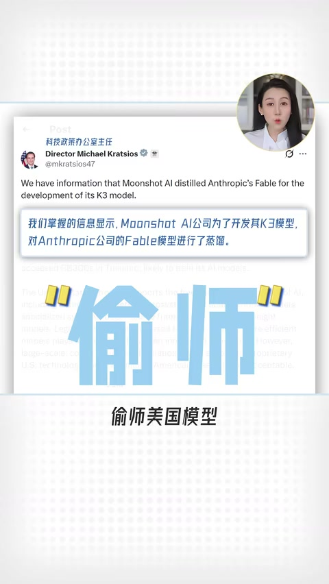
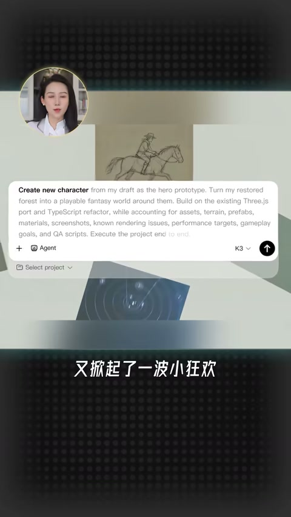
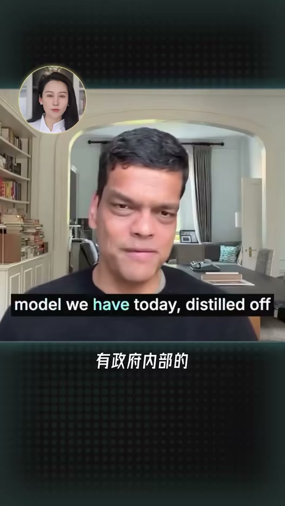
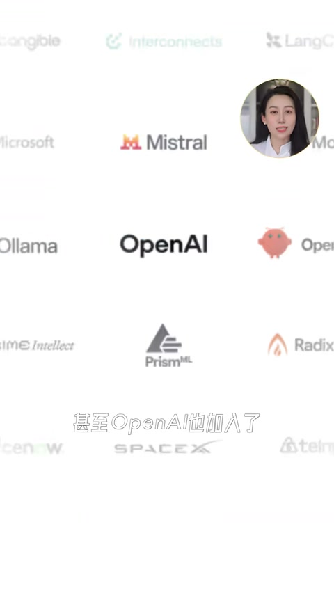

内容要点
B 站「小Lin说」约 5 分 14 秒梳理 Kimi 超大开源模型引发的美方舆论、企业联名请愿、算力导致暂停新订阅，以及能力榜与知识产权争议。ASR 原繁体已转简；校正：「卡拉西梅隆→卡内基梅隆」「抱回→挖回」「闭门洩客→闭门谢客」「Hoggingface→Hugging Face」「驱使榜→趋势榜」「揭入→介入」「前端账→前端榜」「鞋代码→写代码」「徵流→蒸馏」「杨直林→杨植麟（常见写法）」等。中段约 01:28–03:28 与末段存在大段空洞/噪声，论证链条以可识别片段为准。
片中口播作「Kimi K3」；外界常见讨论名可能与版本号传闻不一致，本文保留口播称呼并注明以作者表述为准。
知识结构
请愿、人才叙事、算力爆满暂停订阅。
开源上架冲榜；综合与代码能力被强调。
无证据指控 + 财长「开源≠盗窃」把议题改道。
作者倾向把热闹拆成「技术成绩」与「叙事战场」两层；证据不足的指控要单独标记。
00:00–01:30热闹从何而来
近两百家企业联名请愿保护中国开源模型；创始人留学背景被卷入人才讨论；与此同时产品因用户过多暂停新订阅。作者提出：是真强，还是博弈时间点被放大？接着给出发布参数体量、Hugging Face 冲榜与能力位次（综合靠前、代码相关突出）。


03:20–05:14指控与话术（中段 ASR 空洞）
可识别片段提到「蒸馏 Anthropic、绕道禁售英伟达芯片」但称尚未公布证据；财长贝森特表态支持开源、不支持知识产权盗窃，把战场从「禁中国开源」挪到「如何定义该模型」。作者观察反对封杀的声音其实更大。中段大片 ASR 无效，细节以原片为准。



完整转录
最近Kimi这个K3哈
又有近200家企业联名上书
请愿保护中国的开源模型
还有人呢
开始反思美国的移民和人才问题
说Kimi这个创始人杨直林
明明是在卡拉西梅隆读的博士
怎么当年就把他给抱回国了
然而就在全世界都盯著Kimi的时候
他因为自己用户太多
算力顶不住
直接闭门泄客了
暂停了新用户的订阅
好家伙
这叫一个乱是吧
咱们就来捋一捋哈
这个K3到底是怎么回事
它是真牛
还是中美博一到一个时间点被轰起来
美国有准备拿它不可能
7月16号
月之暗面发布了Kimi K3
2.8万亿参数
是全球最大的开源大模型
27号晚上在Hoggingface上上架
正式开源
30分钟就冲到了驱使榜的榜首
也是史上最快
大家就纷纷揭入
点赞祝贺
那能力怎么样呢
我相信大家多多少少都有所耳闻
确实厉害
综合能力排到了第三
仅次于Anthropic和OpenAI
而且还超过了他俩上一代的模型
前端账更是排到了第一
就是鞋代码的能力非常强
当然
真正让他在商业和政治上打
说Kimi征流了Anthropic的模型
还绕道用了禁售的英伟达芯片
但这些都还没有公布证据
另外
财政部长贝森特也公开表态
原话是说
本届政府支持开源模型
但不支持知识产权盗窃
如果发现了
我没有能力制裁
是不是还挺会说的
他就一下把这个战场
从要不要禁中国的开源模型
转移到了
如何定义K3
这么一个近可攻退可守的位置
当然这是政府
态度比较模糊
但反对封杀
也就是支持开源模型
这个声音其实更大
.